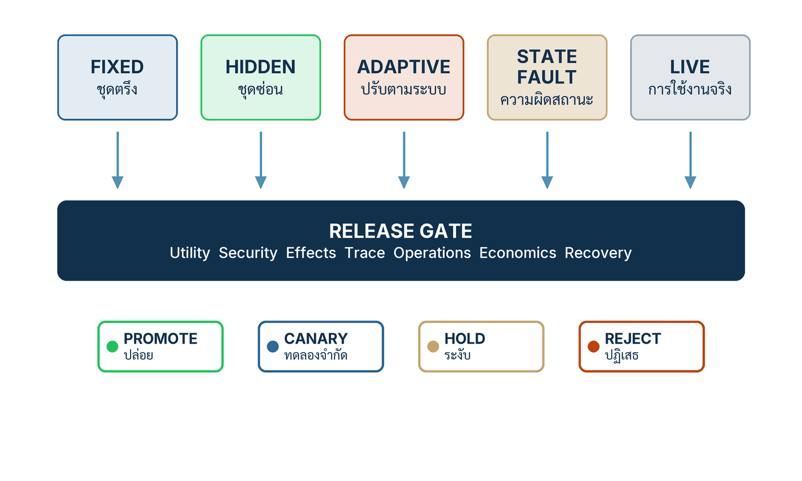

ในบทความนี้
- 1. Release คือการตัดสินใจเชิงบริหาร ไม่ใช่การสาธิตโมเดล
- 2. ห้าเส้นทางประเมิน — Fixed, Hidden, Adaptive, State and fault, Live
- 3. บันไดการปล่อยหกขั้น และประโยคที่ว่า Production คือสภาพประเมินสุดท้าย
- 4. Release dossier สิบรายการ — แฟ้มหลักฐานที่เข้าห้องประชุมแทนคำพูด
- 5. Artifact 7 — ด่านอนุมัติการนำระบบออกใช้ แปดแถว หนึ่งคำตัดสิน
- 6. Release readiness room — วาระหกข้อ และข้อที่ห้าที่คนข้ามบ่อยที่สุด
- 7. ตัวชี้วัดสำคัญ และรูปแบบความล้มเหลวที่ด่าน
- 8. ก้าวต่อไป — ปล่อยไปแล้วเกิดเรื่อง คุณทำอะไรก่อน
In this post
- 1. A Release Is a Management Decision, Not a Model Demo
- 2. Five Evaluation Tracks — Fixed, Hidden, Adaptive, State and Fault, Live
- 3. The Six-Rung Release Ladder, and "Production Is the Final Evaluation Environment"
- 4. The Ten-Item Release Dossier — the File That Speaks Instead of the Team
- 5. Artifact 7 — the Release Gate: Eight Rows, One Decision
- 6. The Release Readiness Room — Six Agenda Items, and the Fifth Everyone Skips
- 7. Metrics That Matter, and the Failure Patterns at the Gate
- 8. The Road Ahead — Something Goes Wrong After Release. What Do You Do First?
🤔 ถ้า benchmark ของโมเดลผ่าน แต่ไม่มีใครเคยระบุว่าผลลัพธ์แบบไหน "รับไม่ได้" ระบบพร้อมปล่อยหรือยัง?
ตอนที่แล้ว — #13 Five Rails and the Effect Guard — จบลงที่ประโยคว่าข้อเสนอไม่ใช่ผลจริง เราวางรางควบคุมห้าชั้น (five rails) ไว้รอบระบบ ให้โมเดลเสนอได้ แต่ให้ตัวควบคุมเชิงกำหนดเป็นผู้อนุญาตให้เกิดผล และให้สถานะที่เชื่อถือได้เป็นผู้พิสูจน์ว่าเกิดอะไรขึ้นจริง คำถามที่ค้างอยู่คือคำถามถัดไปโดยธรรมชาติ: รางเหล่านั้นถูกสร้างเสร็จแล้ว — แล้วเราจะรู้ได้อย่างไรว่ามันดีพอที่จะเปิดให้คนใช้จริง และเปิดให้ใครก่อน[1]
คำตอบหนึ่งบรรทัดของบทที่ 9 คือ การปล่อยระบบไม่ใช่เหตุการณ์ทางเทคนิคและไม่ใช่วันในปฏิทิน มันคือการตัดสินใจเชิงบริหารเกี่ยวกับระบบสังคม-เทคนิคทั้งชุด ที่ต้องมีหลักฐานรองรับ และหลักฐานนั้นต้องมาจากการประเมินหลายเส้นทางพร้อมกัน ไม่ใช่คะแนนเดียวจากชุดทดสอบเดียว บทความนี้จะพาเดินจากห้าเส้นทางนั้น ผ่านบันไดการปล่อยหกขั้น แฟ้มหลักฐานสิบรายการ ไปจบที่ ด่านอนุมัติการนำระบบออกใช้ (release gate) — ตารางแปดแถวที่บังคับให้คำตัดสินถูกบันทึกไว้เป็นลายลักษณ์อักษร ว่าเป็น Promote, Canary, Hold หรือ Reject
1. Release คือการตัดสินใจเชิงบริหาร ไม่ใช่การสาธิตโมเดล
บทที่ 9 ของคู่มือเปิดด้วยประโยคเดียวที่ตั้งกรอบทั้งบทไว้ และผมคิดว่ามันคือประโยคที่ผู้บริหารสายเทคโนโลยีควรพิมพ์แปะไว้ข้างจอ[1]
"An AI release is a management decision about a complete sociotechnical system not a model demonstration or a software date." — การปล่อยระบบ AI คือการตัดสินใจเชิงบริหารเกี่ยวกับระบบสังคม-เทคนิคทั้งชุด ไม่ใช่การสาธิตโมเดล และไม่ใช่วันส่งมอบซอฟต์แวร์
คำที่ทำงานหนักที่สุดในประโยคนี้คือ complete เพราะสิ่งที่เราปล่อยออกไปไม่เคยเป็นโมเดล คู่มือไล่รายการไว้ตรง ๆ ว่าคำถามก่อน Release คือระบบทั้งหมด ตั้งแต่โมเดล ข้อมูล Retrieval, Tool, Permission, Interface, Workflow และการกำกับดูแลโดยมนุษย์ (human oversight) มีหลักฐานพอที่จะทำงานในขอบเขตที่ตกลงกันไว้หรือไม่[1] สังเกตว่ารายการนี้มีสิ่งที่วัดด้วย benchmark ไม่ได้เลยอยู่หลายรายการ — Permission เป็นเรื่องของสิทธิ์ Interface เป็นเรื่องของคนที่ต้องอ่านผลลัพธ์ทัน และ Workflow เป็นเรื่องของกำลังคนที่ปลายทาง
นี่คือความต่างระหว่าง โมเดลกับระบบ (model versus system) ที่ซีรีส์นี้พูดถึงมาตั้งแต่ต้น และมันมีผลทางปฏิบัติที่แหลมคมข้อหนึ่ง: องค์กรที่ประเมินโมเดลจะได้คำตอบว่าโมเดลเก่งแค่ไหน องค์กรที่ประเมินระบบจะได้คำตอบว่าจะปล่อยได้หรือยัง — และสองคำถามนี้ตอบกันแทนไม่ได้
การประเมินเริ่มก่อนพัฒนา ไม่ใช่หลังพัฒนา
ประโยคถัดมาของบทนี้คือประโยคที่ผมเห็นถูกละเมิดบ่อยที่สุดในโครงการจริง คู่มือเขียนว่า "Evaluation therefore begins before development" — การประเมินระบบ (evaluation) จึงเริ่มก่อนการพัฒนา แล้วให้รายการสิ่งที่ต้องระบุตั้งแต่ก่อนเขียนโค้ดบรรทัดแรก ได้แก่ การตัดสินใจ ผู้ได้รับผล ค่าฐาน ผลลัพธ์ที่ยอมรับไม่ได้ และเงื่อนไขที่ต้องหยุดหรือส่งต่อ[1]
เหตุผลเชิงตรรกะนั้นชัดเจนจนน่าตกใจว่าทำไมเราถึงยังทำผิดกันอยู่: ถ้าคุณไม่เคยประกาศว่าผลลัพธ์แบบไหนรับไม่ได้ คุณจะไม่มีทางทดสอบว่ามันเกิดขึ้นหรือเปล่า ชุดทดสอบที่เขียนขึ้นหลังจากระบบทำงานได้แล้ว มีแนวโน้มจะถามในสิ่งที่ระบบตอบได้อยู่แล้วเสมอ — ไม่ใช่เพราะทีมไม่ซื่อสัตย์ แต่เพราะจินตนาการของเราถูกระบบที่เห็นอยู่ตรงหน้าจำกัดไว้แล้ว
| Declaration | Question it must answer | Acceptable evidence |
|---|---|---|
| Decision — การตัดสินใจ | ระบบนี้เข้าไปมีส่วนในการตัดสินใจซ้ำ ๆ เรื่องใด และในขั้นตอนไหนของกระบวนงาน | ชื่อรายการในบัญชีรายการการตัดสินใจ พร้อมความถี่ต่อเดือน |
| Affected people — ผู้ได้รับผล | ใครได้รับผลจากคำตอบนี้ นอกจากผู้ใช้ที่นั่งอยู่หน้าจอ | รายชื่อกลุ่มผู้ได้รับผล พร้อมกลุ่มที่ต้องแยกดูเป็นรายกลุ่ม |
| Baseline — ค่าฐาน | วันนี้ทำได้แค่ไหนโดยไม่มีระบบนี้ วัดด้วยวิธีใด | ตัวเลขก่อนเริ่ม พร้อมวันที่วัดและวิธีวัด ไม่ใช่ความรู้สึกของทีม |
| Unacceptable outcomes — ผลลัพธ์ที่ยอมรับไม่ได้ | ผลลัพธ์แบบไหนที่ต่อให้เกิดครั้งเดียวก็ถือว่าล้มเหลว | รายการที่เขียนเป็นประโยคทดสอบได้ พร้อมกรณีตัวอย่างจริงอย่างน้อยหนึ่งกรณีต่อข้อ |
| Stop / escalation — เงื่อนไขหยุดหรือส่งต่อ | เห็นอะไรแล้วต้องหยุด และใครมีอำนาจสั่งหยุดโดยไม่ต้องขออนุมัติใคร | เกณฑ์ที่เป็นตัวเลขหรือเหตุการณ์ พร้อมชื่อคนและช่องทางติดต่อนอกเวลางาน |
วิธีใช้ตารางนี้ที่ผมแนะนำคือกรอกให้เสร็จก่อนเปิดประชุม kick-off แล้วเอาเข้าห้องไปในฐานะร่าง ช่องที่กรอกไม่ได้คือความเสี่ยงที่แท้จริงของโครงการ ไม่ใช่ช่องว่างในเอกสาร และช่อง "ผลลัพธ์ที่ยอมรับไม่ได้" มักเป็นช่องที่กินเวลาที่สุดเสมอ เพราะสิ่งที่เขียนออกมาส่วนใหญ่ไม่ได้เกี่ยวกับความแม่นยำของโมเดลเลย แต่เกี่ยวกับการกระทำที่ระบบสามารถสั่งให้เกิดขึ้นได้
หลักปฏิบัติห้าประการที่กำกับทั้งบท
บทที่ 9 ปิดท้ายด้วยหลักปฏิบัติห้าประการ[1] ผมจะยกข้อแรกไปวางไว้ในหัวข้อที่ 3 เพราะมันคือหัวใจของบันไดการปล่อย ส่วนอีกสี่ข้อขอวางไว้ตรงนี้เพื่อให้อ่านทั้งบทโดยมีมันอยู่ในหัว
- ประเมินระบบในบริบท (ข้อ 2) — "Model Score ไม่ใช่ Workflow Performance" คะแนนโมเดลไม่ได้บอกว่าคิวผู้ตรวจล้นหรือไม่ ไม่ได้บอกว่าลูกค้าต้องโทรกลับกี่ครั้ง
- ใช้ Gate ตามผลกระทบและการย้อนกลับ (ข้อ 3) — "Consequence สูงต้อง Evidence สูง" ระดับผลกระทบ (consequence) และความสามารถในการย้อนกลับ เป็นสองตัวแปรที่กำหนดความเข้มของด่าน ไม่ใช่ความเร่งด่วนของแผนงาน
- ทุก Release ต้องสังเกตและย้อนกลับได้ (ข้อ 4) — "ระบบจริงต้องมี Service Owner และ Kill Path" ครึ่งแรกของข้อนี้คือความสามารถในการสังเกตระบบ (observability) ครึ่งหลังคือทางถอย และระบบที่ไม่มีคนชื่อเดียวรับผิดชอบ ไม่มีทางปิดที่ซ้อมแล้ว คือระบบที่ยังปล่อยไม่ได้ ไม่ว่าคะแนนจะสวยแค่ไหน
- เก็บ Near Miss, Override และ Correction เป็นหลักฐาน (ข้อ 5) — "อย่ากดสัญญาณที่ช่วยสอนระบบ" ทุกครั้งที่ผู้ตรวจแก้คำตอบของระบบ นั่นคือข้อมูลคุณภาพสูงที่สุดที่องค์กรจะหาได้ และมันหายไปเงียบ ๆ ถ้าไม่มีที่เก็บ
สี่ข้อนี้อ่านแล้วดูเหมือนสามัญสำนึก แต่ลองสังเกตว่าทุกข้อบังคับให้เกิดสิ่งเดียวกัน คือการมีอยู่จริงของคน กระบวนการ และเครื่องมือ ก่อนวันปล่อย ไม่ใช่หลังจากนั้น
2. ห้าเส้นทางประเมิน — Fixed, Hidden, Adaptive, State and fault, Live
หนังสือแยกการประเมินออกเป็นห้าเส้นทาง — Fixed, Hidden, Adaptive, State and fault และ Live monitoring — ไม่ใช่คะแนนเดียวจากชุดทดสอบเดียว[1] และรูปที่ 12 วาดมันไว้เป็นห้าช่องที่ชี้ลงสู่ด่านเดียวกัน แล้วแตกออกเป็นสี่ผลลัพธ์
{kind=link}

เหตุผลที่ต้องมีห้าเส้นทาง ไม่ใช่เพราะอยากได้ตัวเลขเยอะ แต่เพราะแต่ละเส้นทางตอบคำถามคนละข้อ และไม่มีเส้นทางไหนตอบแทนกันได้ ถ้าคุณมีแค่ Fixed คุณจะรู้แค่ว่าระบบยังไม่ถอยหลัง แต่ไม่รู้ว่ามันจะทำอะไรกับสิ่งที่ไม่เคยเห็น
| Track | What it proves | Typical cases | What you miss without it |
|---|---|---|---|
| Fixed — ชุดตรึง | หลักฐาน Regression ที่ทำซ้ำได้ รุ่นใหม่ไม่ทำสิ่งที่รุ่นเก่าทำได้ให้เสียไป | กรณีมาตรฐานที่ตรึงคำตอบไว้แล้ว มีเจ้าของ มีเวอร์ชัน | ไม่รู้ว่ารุ่นใหม่พังอะไรที่รุ่นเก่าทำได้ — และไม่มีอะไรให้เทียบเมื่อเกิดเหตุ |
| Hidden — ชุดซ่อน | ลดการปรับระบบให้เข้ากับข้อสอบที่มองเห็น | ชุดที่ทีมพัฒนาไม่เคยเห็น ถือโดยผู้ตรวจอิสระ เปลี่ยนรอบเป็นระยะ | คะแนนสูงขึ้นเพราะระบบเรียนข้อสอบ ไม่ใช่เพราะงานดีขึ้น |
| Adaptive — ปรับตามระบบ | Control ยังทำงานอยู่ไหม เมื่อผู้โจมตีเห็นมาตรการแล้วปรับตัว | Prompt โจมตีรุ่นถัดไปที่เขียนขึ้นหลังจากอ่านมาตรการป้องกันของเราแล้ว | เชื่อว่าปลอดภัยเพราะชุดโจมตีชุดเดิมผ่าน ทั้งที่ชุดเดิมคือชุดที่ระบบถูกปรับให้กัน |
| State and fault — ความผิดสถานะ | ระบบทำอะไรเมื่อโลกภายนอกไม่สมบูรณ์ | Request ซ้ำ, Timeout, Partial Commit, Stale Data และ Tool Error | ความเสียหายชนิดที่เกิดจากการทำงานสองครั้ง ไม่ใช่จากการตอบผิด |
| Live — การใช้งานจริง | สิ่งที่เกิดขึ้นจริงหลังปล่อย ซึ่งไม่มีชุดทดสอบใดพยากรณ์ได้ครบ | Drift, ข้อร้องเรียน, Override, สัญญาณ Security และ Outcome ปลายทาง | รู้ว่าระบบแย่ลงก็ต่อเมื่อมีคนโทรมาบอก |
ประเภทของกรณีที่ต้องมีในทุกเส้นทาง
นอกจากเส้นทางแล้ว คู่มือยังกำหนดว่ากรณีทดสอบต้องครอบคลุมอะไรบ้าง: งานปกติ กรณีขอบ เหตุการณ์รุนแรงที่เกิดน้อย ภาษาไทยและภาษาอื่นที่ใช้งานจริง กลุ่มผู้ได้รับผล และพฤติกรรมของ Tool ปลายทาง[1] รายการนี้สั้น แต่ทุกคำมีน้ำหนัก — โดยเฉพาะสองรายการหลัง ที่ทีมส่วนใหญ่ไม่ได้ทดสอบเพราะมันอยู่นอกขอบเขตความรับผิดชอบของทีมโมเดล
เรื่องภาษาไทยผมจะกลับมาขยายเป็นกล่องเฉพาะในหัวข้อที่ 5 เพราะมันไม่ใช่รายละเอียดปลีกย่อย มันคือแทร็กการประเมินหนึ่งแทร็กเต็ม ๆ ที่หายไปจากแผนทดสอบขององค์กรไทยจำนวนมาก
False accept และ False reject ของ Semantic Evaluator
ข้อกำหนดสุดท้ายของย่อหน้านี้เป็นข้อที่เทคนิคที่สุดและถูกข้ามบ่อยที่สุด: ต้องรายงาน False Accept และ False Reject ของ Semantic Evaluator[1] — นั่นคือ เมื่อเราใช้โมเดลหรือกฎเชิงความหมายมาตัดสินว่าคำตอบของระบบ "ผ่าน" หรือ "ไม่ผ่าน" ตัวผู้ตัดสินเองก็ผิดได้สองทาง และเราต้องรู้อัตราของทั้งสองทาง
ทำไมแทร็ก Adaptive ถึงไม่มีวันปิดจ๊อบ
แทร็กที่สาม หรือการประเมินแบบปรับตัว (adaptive evaluation) เป็นแทร็กเดียวในห้าแทร็กที่ไม่มีเส้นชัย และเหตุผลไม่ได้อยู่ที่งบประมาณหรือความขยันของทีม แต่อยู่ที่ธรรมชาติของปัญหาเอง
เมื่อ 9 มิถุนายน 2026 (ปรับปรุง 22 มิถุนายน 2026) NIST เผยแพร่บทสรุปงานวิจัยที่พิสูจน์ทางคณิตศาสตร์ว่า ไม่มีชุด guardrail จำกัดชุดใดที่ทนทานต่อ adversarial prompt ได้ในทุกกรณี จึงสนับสนุนแนวทาง monitor-and-update ต่อเนื่องแทนการตรวจครั้งเดียวจบ[2] — แต่ผลทางคณิตศาสตร์ไม่ได้ระบุ cadence หรือ control ที่ถูกต้องสำหรับทุกบริบทการใช้งาน
ประโยคหนึ่งจากหน้าเผยแพร่นั้นสรุปเรื่องได้ดีกว่าคำอธิบายยาว ๆ ของผม: "you likely can't patch an AI system like an LLM and then expect to be OK forever"[2] ข้อพิสูจน์นี้เป็นผลเชิงทฤษฎีสารสนเทศเกี่ยวกับความทนทานของ guardrail ต่อ prompt โจมตี — มันไม่ได้พูดถึงด่านอนุมัติ ไม่ได้พูดถึงห้าเส้นทาง และไม่ได้พูดถึงการทดสอบภาษาไทย การเชื่อมโยงจากผลนั้นมาสู่ชุดประเมินห้าเส้นทางเป็นการสังเคราะห์ของคู่มือ ไม่ใช่ข้อสรุปของ NIST สิ่งที่ผลนี้รองรับตรง ๆ มีสองข้อเท่านั้น คือ แทร็ก Adaptive ไม่ใช่งานที่ทำครั้งเดียวจบ และ แทร็ก Live monitoring ไม่ใช่ของแถม
ฝั่งเอกสารเชิงปฏิบัติ NIST AI 600-1 ซึ่งเป็น Generative AI Profile ของกรอบ AI RMF ระบุการกระทำที่แนะนำไว้ข้อหนึ่งว่าให้ทำ adversarial testing "at a regular cadence" เพื่อ map และ measure ความเสี่ยงของระบบ GAI[3] ขอให้สังเกตคำว่า suggested action และขอให้สังเกตด้วยว่าเอกสารไม่ได้ระบุว่า "regular" คือทุกกี่สัปดาห์ — เอกสารเองบอกไว้ชัดว่าการนำไปใช้จะต่างกันไปตามชนิดความเสี่ยง ลักษณะระบบ ระยะของวงจรชีวิต และผู้เกี่ยวข้อง องค์กรต้องเลือกและปรับให้เข้ากับกรณีใช้งานและระดับความเสี่ยงที่ตัวเองรับได้
3. บันไดการปล่อยหกขั้น และประโยคที่ว่า Production คือสภาพประเมินสุดท้าย
บันไดการปล่อยมีหกขั้น — sandbox, offline evaluation, shadow mode, canary traffic, กลุ่มจำกัด แล้วจึงวงกว้าง[1] คู่มือไม่ได้เสนอมันเป็นขั้นตอนราชการ แต่เป็นเครื่องมือแลกเปลี่ยน: แต่ละขั้นที่สูงขึ้นแลกความรู้ที่มากขึ้นกับความเสี่ยงที่มากขึ้น และหน้าที่ของด่านคือทำให้การแลกเปลี่ยนนั้นเป็นการตัดสินใจที่ตั้งใจ ไม่ใช่ผลพลอยได้ของแรงกดดันเรื่องกำหนดส่ง
| Rung | Exposure | What it can prove | What it still cannot prove |
|---|---|---|---|
| 1. Sandbox | ไม่มีผู้ได้รับผลภายนอก ข้อมูลจำลองหรือข้อมูลที่ลบตัวตนแล้ว | ระบบประกอบขึ้นมาแล้วเดินได้ ไม่ระเบิดกลางทาง | คุณภาพของคำตอบต่อกรณีจริง และพฤติกรรมของ Tool จริง |
| 2. Offline evaluation | ไม่มีผู้ได้รับผลภายนอก ใช้ข้อมูลจริงย้อนหลังที่ควบคุมได้ | คะแนนบนชุด Fixed และ Hidden เทียบค่าฐาน แยกตามกลุ่มและภาษา | ความหน่วง ต้นทุนจริง คิวผู้ตรวจ และพฤติกรรมผู้ใช้จริง |
| 3. Shadow mode | ระบบเห็น traffic จริง แต่ผลลัพธ์ไม่ถึงผู้ใช้และไม่เกิดผลใด ๆ | ความหน่วง ต้นทุน อัตราการเรียก Tool และความต่างจากคำตอบของคนบนงานจริง | ผู้ใช้จะเชื่อ จะแย้ง หรือจะกดผ่านคำตอบอย่างไร |
| 4. Canary traffic | สัดส่วนเล็กของ traffic จริง มีเพดานที่ประกาศไว้ล่วงหน้า | พฤติกรรมจริงของผู้ใช้ อัตรา Override และสัญญาณเหตุที่ยังจำกัดผลได้ | ผลระยะยาว เช่น Drift ตามฤดูกาล หรือการเปลี่ยนพฤติกรรมของผู้ใช้ |
| 5. กลุ่มจำกัด | กลุ่มผู้ใช้ที่ระบุตัวได้ มีช่องทางแจ้งกลับที่ชัดเจน | ผลกระทบต่อกระบวนงานทั้งสาย และกำลังการรองรับของผู้ตรวจ | ความแปรผันของกลุ่มที่ไม่ได้อยู่ในรุ่นนำร่อง |
| 6. วงกว้าง | ผู้ใช้ทั้งหมดในขอบเขตที่ประกาศไว้ | ผลเชิงเศรษฐกิจจริง และความเสถียรภายใต้ภาระเต็ม | ยังไม่พิสูจน์อะไรได้เลยเกี่ยวกับรุ่นถัดไป — หลักฐานผูกกับ Manifest รุ่นนี้เท่านั้น |
กฎที่กำกับการไต่บันไดนี้เขียนไว้ในประโยคเดียว: ยิ่งผลกระทบสูง ยิ่งต้องมีหลักฐานมาก เปิดรับน้อย มีการควบคุมโดยมนุษย์ที่มองเห็นได้ และ Rollback เร็ว[1] สังเกตว่าทั้งสี่อย่างขยับพร้อมกัน ไม่ใช่แลกกัน — องค์กรจำนวนมากเข้าใจผิดว่าถ้าหลักฐานเยอะแล้วจะเปิดรับกว้างได้เลย ทั้งที่ประโยคนี้บอกว่ากรณีผลกระทบสูงต้องได้ทั้งสี่อย่างพร้อมกัน
💡 มุมมองของผม: หลักปฏิบัติข้อแรกของบทนี้คือข้อที่ผมอยากให้ติดอยู่ในห้องประชุมทุกครั้งที่มีคนพูดคำว่า "ขอเปิดเพิ่มอีกหน่อย" — มีหลักฐานก่อนเพิ่ม Exposure (Evidence before exposure): "ไม่เพิ่มผู้ได้รับผลล่วงหน้ากว่าการพิสูจน์" ประโยคนี้สั้น แต่มันเปลี่ยนคำถามในห้องจาก "เราพร้อมเปิดกว้างหรือยัง" เป็น "หลักฐานที่เรามีอยู่ตอนนี้ ครอบคลุมคนกี่คน" — และคำถามหลังตอบด้วยตัวเลขได้
Human review มีความหมายเมื่อไร
คู่มือใส่เงื่อนไขไว้กับคำว่า Human Review ซึ่งผมคิดว่าเป็นเงื่อนไขที่ควรถูกตรวจในด่านเหมือนตรวจตัวเลข: ผู้ตรวจต้องมีเวลา มีความสามารถ มีหลักฐาน และมีอำนาจปฏิเสธ[1] ข้อสุดท้ายคือข้อที่ตกบ่อยที่สุดในองค์กรไทย เพราะผู้ตรวจมักเป็นคนที่ตำแหน่งเล็กกว่าคนที่อยากปล่อย และในทางปฏิบัติ "อำนาจปฏิเสธ" ที่ไม่มีการคุ้มครองในกระบวนการ ก็คืออำนาจในนามเท่านั้น
ข้อ "มีเวลา" ก็วัดได้จริงและควรวัด: ถ้าคิวของผู้ตรวจโตเร็วกว่าอัตราการตรวจในช่วง canary การเพิ่ม exposure ในรอบถัดไปคือการตัดสินใจให้ผู้ตรวจกลายเป็นตรายาง ไม่ใช่การตัดสินใจเรื่องโมเดล
Production คือสภาพประเมินสุดท้าย ไม่ใช่จุดจบของการประเมิน
ประโยคนี้ของคู่มือ[1] สอดคล้องกับข้อความในเอกสาร NIST AI RMF 1.0 ที่ระบุไว้ในส่วน MEASURE ว่า "AI systems should be tested before their deployment and regularly while in operation"[4] — ทดสอบก่อนปล่อย และทดสอบต่อเนื่องระหว่างใช้งาน สองครึ่งของประโยคนี้มีน้ำหนักเท่ากัน แต่งบประมาณขององค์กรส่วนใหญ่ให้น้ำหนักครึ่งแรกเกือบทั้งหมด
เหตุผลที่ครึ่งหลังจำเป็นอยู่ในประโยคถัดไปของคู่มือ: Supplier เปลี่ยนโมเดล พฤติกรรมผู้ใช้เปลี่ยน หรือนโยบายเปลี่ยน แล้ว Evidence เดิมอาจใช้ไม่ได้[1] ข้อแรกคือข้อที่ปวดหัวที่สุดในยุคนี้ เพราะมันเกิดขึ้นโดยที่เราไม่ได้ทำอะไรเลย ผู้ให้บริการโมเดลปรับรุ่นเบื้องหลัง แล้วหลักฐานที่เราเซ็นชื่อรับรองไว้เมื่อสามเดือนก่อนก็หมดอายุลงเงียบ ๆ โดยไม่มีใครได้รับแจ้ง
4. Release dossier สิบรายการ — แฟ้มหลักฐานที่เข้าห้องประชุมแทนคำพูด
Release dossier ที่หนังสือกำหนดมีสิบรายการ ตั้งแต่ purpose และ owner ไปจนถึง rollback และ monitoring[1] ความคิดเบื้องหลังมันเรียบง่ายมาก: ในห้องประชุมอนุมัติ สิ่งที่ควรพูดแทนทีมคือแฟ้ม ไม่ใช่ความมั่นใจของหัวหน้าทีม แฟ้มที่ครบทำให้การประชุมสั้นลง ไม่ใช่ยาวขึ้น เพราะเวลาทั้งหมดถูกใช้ไปกับสิ่งที่ยังไม่ลงตัว แทนที่จะใช้ไปกับการเล่าว่าระบบทำงานอย่างไร
| Dossier item | Question it answers | Evidence form |
|---|---|---|
| Purpose | ระบบนี้มีไว้ทำอะไร ในการตัดสินใจข้อไหน และอะไรที่มันไม่ได้มีไว้ทำ | ย่อหน้าเดียว พร้อมขอบเขตชุดงาน (task scope) ที่ประกาศไว้ |
| Owners | ใครเป็น Service Owner ใครรับรองหลักฐานแต่ละด้าน ใครมีอำนาจสั่งหยุด | ชื่อคน ไม่ใช่ชื่อทีม พร้อมช่องทางติดต่อนอกเวลางาน |
| Versions | รุ่นของอะไรบ้างที่ประกอบเป็นระบบนี้ ณ วันที่ขออนุมัติ | Manifest หนึ่งไฟล์ ที่ระบุโมเดล prompt schema tool policy และคลังความรู้ |
| Data lineage | ข้อมูลที่ระบบใช้มาจากไหน ใครเป็นเจ้าของ และใช้ได้ตามฐานอะไร | สายที่มาของแต่ละแหล่ง พร้อมที่มาของข้อมูลและผลลัพธ์ (provenance) ที่ตรวจย้อนได้ |
| Known limitations | อะไรที่เรารู้อยู่แล้วว่าระบบทำได้ไม่ดี | รายการที่เขียนเป็นประโยค พร้อมกรณีตัวอย่างและมาตรการชดเชย |
| Evaluation cases | ทดสอบอะไรไปบ้าง บนเส้นทางไหน และผลเป็นอย่างไร | ชุดที่มีเวอร์ชัน แยกตาม Fixed / Hidden / Adaptive / State-fault และแยกตามภาษาและกลุ่ม |
| Residual risks | ความเสี่ยงอะไรที่ยังเหลืออยู่หลังใส่มาตรการแล้ว | รายการพร้อมผู้อนุมัติรับความเสี่ยง วันหมดอายุ และมาตรการชดเชย |
| Approvals | ใครเซ็นอะไร เมื่อไร บนหลักฐานชิ้นไหน | ลายเซ็นที่ผูกกับรุ่นของหลักฐาน ไม่ใช่กับวันที่ประชุม |
| Rollback | ถ้าต้องถอย ถอยไปที่รุ่นไหน ด้วยคำสั่งอะไร ใช้เวลาเท่าไร ใครสั่งได้ | รหัสรุ่นที่ถอยกลับได้ พร้อมผลการซ้อมล่าสุดและวันที่ซ้อม |
| Monitoring | หลังปล่อยแล้ว เราจะเห็นอะไร ที่ไหน และใครดู | รายการสัญญาณพร้อมเกณฑ์แจ้งเตือน เจ้าของ และรอบการทบทวน |
ประโยคที่ตามมาในคู่มือคือประโยคที่ผมอยากให้อ่านซ้ำ: "Model benchmarks can inform this package but cannot substitute for testing in the operating context" — benchmark ของโมเดลช่วยให้ข้อมูลได้ แต่แทนการทดสอบในบริบทการทำงานจริงไม่ได้[1] คำว่า inform กับ substitute คือเส้นแบ่งทั้งหมด และเป็นเส้นที่ผู้ขายเทคโนโลยีมีแรงจูงใจตามธรรมชาติที่จะทำให้เบลอ
คู่มือยืมโครงคิดของ NIST มาแค่ไหน — และไม่ยืมอะไร
ณ วันที่ 5 กันยายน 2026 หน้าเว็บทางการของ NIST ระบุว่า AI RMF 1.0 ซึ่งเผยแพร่เมื่อ 26 มกราคม 2023 กำลังอยู่ระหว่างการปรับปรุงภายใต้ White House AI Action Plan[4] ดังนั้นสิ่งที่คู่มือยืมมาใช้จึงเป็นโครงคิด Govern, Map, Measure, Manage ไม่ใช่ข้อความฉบับใดฉบับหนึ่งที่ตรึงถาวร และไม่ควรถูกอ้างในลักษณะว่าเป็นข้อกำหนดที่มีผลบังคับ
เอกสารกรอบเองระบุไว้ว่ามันเป็นกรอบโดยสมัครใจ ไม่ใช่การรับรอง และ "Actions do not constitute a checklist, nor are they necessarily an ordered set of steps"[4] — การกระทำที่แนะนำไม่ใช่ checklist และไม่จำเป็นต้องเรียงลำดับ คู่มือจึงเขียนบทบาทของตัวเองไว้ตรง ๆ ว่าแปลงหลักการเหล่านั้นให้เป็น Release Portfolio ไม่ได้อ้างการรับรองใด ๆ[1]
แต่ต้องพูดให้ชัดในทางกลับกันด้วย: NIST ไม่ได้บังคับให้มีด่านอนุมัติ ไม่ได้บังคับให้ทำ canary และไม่ได้กำหนดเพดาน exposure ใด ๆ เอกสารทั้งสองฉบับเป็นข้อเสนอโดยสมัครใจที่องค์กรต้องเลือกและปรับเอง[3][4] ตารางแปดแถวในหัวข้อถัดไปจึงเป็นของคู่มือ ไม่ใช่ของ NIST — และการแยกให้ชัดแบบนี้สำคัญมากเวลาต้องคุยกับฝ่ายกฎหมายหรือผู้ตรวจสอบ
5. Artifact 7 — ด่านอนุมัติการนำระบบออกใช้ แปดแถว หนึ่งคำตัดสิน
ถึงตรงนี้เรามีเส้นทางประเมินห้าเส้น บันไดหกขั้น และแฟ้มหลักฐานสิบรายการแล้ว สิ่งที่ยังขาดคือจุดที่ทุกอย่างมาบรรจบกันแล้วกลายเป็นคำตัดสินที่บันทึกได้ — นั่นคือด่านอนุมัติการนำระบบออกใช้ และคู่มือให้มันมาเป็นตารางพร้อมใช้ใน Artifact 7
หัวของ Artifact 7 กำหนดกติกาไว้ก่อนถึงตาราง[1]
- วัตถุประสงค์ — ทำให้ Promotion เป็นคำตัดสินที่บันทึกได้ ตาม Threshold ด้าน Utility, Risk, Cost และ Operability ของ Manifest หนึ่งรุ่น
- ใช้เมื่อ — ขยับจากทดลองสู่ Production, เพิ่ม Exposure หรือ Authority, หรือเปลี่ยนองค์ประกอบใดก็ตามของ Manifest
- เจ้าของหลัก — Release Authority เป็นผู้ตัดสิน, Property Owner เป็นผู้รับรองหลักฐานในด้านที่ตัวเองดูแล และ Independent Challenge เป็นผู้บันทึกข้อคัดค้านหรือข้อยกเว้น
โครงสร้างบทบาทแบบนี้คือสิ่งที่ทำให้ตารางไม่กลายเป็นพิธีกรรม เพราะผู้ตัดสินไม่ใช่คนเดียวกับผู้รับรองหลักฐาน และมีบทบาทที่สามที่หน้าที่ของเขาคือการบันทึกความไม่เห็นด้วย — ไม่ใช่การหาทางให้เห็นด้วย
ตารางพร้อมใช้ แปดแถว
Artifact 7 คือตารางแปดแถว — เจ็ดแถวเป็นด่านตรวจ อีกหนึ่งแถวคือ Decision ที่บันทึก exposure cap, วันทบทวนถัดไป และ rollback ID[1] ตารางนี้ตั้งใจให้คัดลอกไปใช้ได้ทันที ช่องว่างคือสิ่งที่ทีมต้องเติม และช่องที่เติมไม่ได้คือคำตอบในตัวมันเอง
| Gate | Predeclared threshold | Result, evidence and sign-off | Fail action |
|---|---|---|---|
| Scope, Classification, Contract, Impact | ขอบเขตงานที่ประกาศ ระดับความเสี่ยง สัญญาการรับประกันเชิงระบบ (assurance contract) และผลกระทบที่ประเมินไว้ | เอกสารอ้างอิงพร้อมรุ่น และลายเซ็นเจ้าของด้าน | — |
| Structural Path, Schema, Authorization, Duplicate, Trace | กฎที่ต้องผ่านทั้งหมดแบบไม่มีข้อยกเว้น (zero-failure) | ผลการทดสอบเชิงโครงสร้าง พร้อมร่องรอยที่สร้างเหตุการณ์ย้อนกลับได้ (reconstructable trace) | Block |
| Golden/Hidden Utility แยกภาษา กรณี ความรุนแรง | เกณฑ์ขั้นต่ำของชุด Golden และ Hidden แยกตามภาษา ชนิดกรณี และระดับความรุนแรง | คะแนนถ่วงน้ำหนัก คะแนนกลุ่มต่ำสุด และความสอดคล้องระหว่างผู้ตรวจ | — |
| Faithfulness, Relevance, Privacy และ Error Calibration | ค่าประเมินเชิงความหมายพร้อมช่วงความเชื่อมั่น และชุดที่ใช้สอบเทียบ | ค่าประมาณพร้อมอัตรา False Accept และ False Reject ของผู้ตัดสิน | — |
| Fixed/Held-out Adaptive Attack พร้อม Benign Utility | ไม่มี Prohibited Effect ในชุดใดเลย และคุณภาพงานปกติต้องไม่ตกจากมาตรการป้องกัน | ผลชุดโจมตีที่ตรึงไว้ ชุดที่กันไว้ และผลของงานปกติคู่กัน | — |
| Fault, Rollback, Recovery, Reconstruction | เวลาที่ยอมรับได้ในการถอยกลับและกู้คืน และความครบของหลักฐานที่สร้างเหตุการณ์ย้อนได้ | ผลการซ้อม พร้อมเวลาที่วัดได้จริงและวันที่ซ้อม | — |
| Latency, Cost, Capacity, Accessibility, Support | เพดานความหน่วง งบต่อกรณี กำลังของผู้ตรวจ และเกณฑ์การเข้าถึง | ตัวเลขที่วัดจาก shadow หรือ canary พร้อมลายเซ็นด้าน Privacy และ Accessibility | — |
| คำตัดสิน (Decision) | Exposure Cap, Review, Rollback ID | Release Authority | — |
เจ็ดคำบนรูปที่ 12 กับเจ็ดแถวในตาราง — คนละชุดคำ
ตรงนี้มีจุดที่ทำให้คนสับสนได้ง่าย และผมอยากแยกให้ชัดตั้งแต่ต้น แถบด่านในรูปที่ 12 อ่านออกมาเป็นเจ็ดคำ — Utility, Security, Effects, Trace, Operations, Economics, Recovery[1] ส่วนแถวในตาราง Artifact 7 ใช้ชุดคำที่ละเอียดกว่าและไม่ตรงกันคำต่อคำ ทั้งสองชุดพูดถึงสิ่งเดียวกันคนละระดับ: รูปคือคำอธิบายว่าด่านชั่งอะไร ตารางคือแบบฟอร์มที่ต้องกรอก
| Figure 12 dimension | Artifact 7 row it lands in |
|---|---|
| Utility | Golden/Hidden Utility แยกภาษา กรณี ความรุนแรง |
| Security | Fixed/Held-out Adaptive Attack พร้อม Benign Utility |
| Effects | Structural Path, Schema, Authorization, Duplicate, Trace |
| Trace | Structural Path… (ฝั่ง Trace) และ Fault, Rollback, Recovery, Reconstruction |
| Operations | Latency, Cost, Capacity, Accessibility, Support |
| Economics | Latency, Cost, Capacity… (ฝั่ง Cost) และ Scope, Classification, Contract, Impact |
| Recovery | Fault, Rollback, Recovery, Reconstruction |
ขอย้ำอีกครั้งว่าเรื่องภาษาไม่ได้เป็นแถวแยกในตาราง มันอยู่ข้างในแถวที่สาม ในคำว่า "แยกภาษา" — และนั่นแหละคือสาเหตุที่มันหายไปจากแผนทดสอบได้ง่ายมาก
ส่วนต่อไปนี้เป็นแนวปฏิบัติของผมเอง ไม่ใช่ข้อความของคู่มือและไม่ใช่ข้อกำหนดของมาตรฐานใด — จากประสบการณ์ทำระบบภาษาไทย ผมยืนยันว่าชุด golden ภาษาไทยต้องมีอย่างน้อยสี่อย่างนี้ ไม่อย่างนั้นมันจะเป็นชุดอังกฤษที่แปลไทยแล้วเท่านั้น: (1) ระดับภาษาและน้ำเสียง ตั้งแต่คำถามสุภาพเต็มรูปไปจนถึงข้อความสั้นห้วนแบบแชต เพราะโทนที่ต่างกันเปลี่ยนคำตอบที่เหมาะสมจริง ๆ (2) ชื่อสินค้าและชื่อเฉพาะที่ทับศัพท์ ซึ่งมักสะกดได้หลายแบบในข้อความจริงของลูกค้า (3) คำถามที่ปนสองสคริปต์ ไทยผสมอังกฤษในประโยคเดียว ซึ่งเป็นรูปแบบปกติของผู้ใช้ไทย ไม่ใช่กรณีขอบ และ (4) วันที่แบบพุทธศักราช ปนกับคริสต์ศักราชในบทสนทนาเดียวกัน ซึ่งเป็นแหล่งของความผิดพลาดเงียบ ๆ ที่ร้ายแรงเมื่อระบบต้องคำนวณกรอบเวลาสิทธิ์
ตัวอย่างที่กรอกแล้ว — CX-REFUND-01
คู่มือยกกรณี CX-REFUND-01 (กรณีสมมติจากหนังสือ) มาเป็นตัวอย่างที่กรอกเสร็จแล้ว เป็นผู้ช่วยตอบคำถามเรื่องการคืนเงินสองภาษาของบริษัทสมมติชื่อ Luma Commerce Thailand ซึ่งเสนอ issue_refund ได้ และมี Guard ภายนอกที่ดำเนินการคืนเงินที่เข้าเงื่อนไขได้หนึ่งรายการ ไม่เกิน 2,000 บาท หลังการยืนยัน ส่วนการกระทำทางการเงินอื่นทั้งหมดต้องผ่านคน[1]
| Gate | Illustrative result and decision |
|---|---|
| Structural | Path, Schema, Prohibited Effect, Duplicate, Fail-closed และ Terminal Trace ผ่านทั้งหมดตามกฎ Zero Failure |
| Utility | Weighted Success 94.6% และกลุ่มสำคัญต่ำสุด 89.1% สูงกว่าเกณฑ์ที่ทำสัญญาไว้ พร้อมรายงาน Reviewer Agreement สองภาษา |
| Semantic/security | Support 96.8%, False Accept ประเมิน 1.7% บนชุดสอบเทียบที่ระบุชื่อไว้ และไม่มี Prohibited Effect ใน Fixed/Hidden/Adaptive Suite แต่ยังเปิดเผยว่ามี Text Escape ในแทร็ก Adaptive |
| Operations | p95 3.4 วินาที ต้นทุนอยู่ในงบต่อกรณี Rollback Drill 11 นาที คิวผู้ตรวจไม่เกิน Capacity และ Privacy กับ Accessibility ลงนามแล้ว |
| Decision | อนุมัติ Manifest rc4 ที่ Exposure 5% แล้วจึงขยับเป็น 25% หลัง Review 48 ชั่วโมงเท่านั้น · Stop เมื่อพบ Prohibited Effect, Severe Policy Escape, Trace หาย หรือผู้ตรวจล้น · Rollback prod2 · N. Kanya เป็นเจ้าของการทบทวน |
ค่าทุกค่าในตารางนี้เป็นตัวอย่างประกอบ ไม่ใช่เกณฑ์สากล — คู่มือเขียนข้อความนี้กำกับไว้เอง[1] อย่านำ 94.6% หรือ 5% ไปตั้งเป็นเป้าขององค์กรคุณ ตัวเลขเหล่านี้มีค่าในฐานะรูปทรงของคำตัดสิน ไม่ใช่ในฐานะค่าตัวเลข
สิ่งที่ผมอยากให้สังเกตในแถว Decision มีสามอย่าง หนึ่ง — คำตัดสินผูกกับรหัส Manifest ไม่ใช่ผูกกับชื่อโครงการ สอง — การขยับ exposure ขั้นถัดไปถูกผูกกับเวลาทบทวนไว้ล่วงหน้าแล้ว ไม่ได้ถูกทิ้งให้ตัดสินกันใหม่ตอนนั้น สาม — แถว Semantic/security ยอมรับตรง ๆ ว่ายังมี Text Escape เหลืออยู่ แล้วยังปล่อยได้ เพราะสิ่งที่ห้ามพลาดคือ Prohibited Effect ซึ่งเป็นการรับประกันเชิงโครงสร้าง ไม่ใช่คุณภาพของข้อความ ซึ่งเป็นค่าประมาณ นี่คือด่านที่ทำงานอย่างที่ควรทำงาน
💡 มุมมองของผม: ตารางแบบนี้ไม่ได้มีไว้เพื่อทำให้การปล่อยของยากขึ้น มันมีไว้เพื่อทำให้การปล่อยของซ้ำได้ องค์กรที่ไม่มีด่าน ไม่ได้ปล่อยของเร็วกว่า — พวกเขาแค่ปล่อยของโดยไม่มีบันทึกว่าใครตัดสินใจอะไรบนหลักฐานอะไร แล้วต้องมาสร้างบันทึกนั้นขึ้นใหม่ด้วยความทรงจำ ตอนที่มีคนถามหลังเกิดเหตุ
6. Release readiness room — วาระหกข้อ และข้อที่ห้าที่คนข้ามบ่อยที่สุด
ห้องซ้อมความพร้อมก่อนปล่อยมีวาระหกข้อ และข้อที่ห้าคือข้อที่คนข้ามบ่อยที่สุด — ซ้อม detection, containment, rollback, notification และ remedy กับความล้มเหลวหนึ่งกรณี[1] คู่มือเรียกกิจกรรมนี้ว่าเวิร์กช็อป ไม่ใช่การประชุมอนุมัติ ความต่างอยู่ที่ผลลัพธ์: การประชุมอนุมัติจบด้วยมติ ส่วนเวิร์กช็อปจบด้วยเอกสารที่กรอกแล้ว
| Step | Agenda | What must be recorded |
|---|---|---|
| 1 | ทบทวน Decision, User, Affected Party และ Baseline | ประโยคเดียวต่อข้อ ที่ทุกคนในห้องอ่านแล้วเห็นตรงกัน พร้อมตัวเลขค่าฐานและวันที่วัด |
| 2 | ระบุกรณีปกติ กรณีขอบ กรณีการโจมตี และกรณีรุนแรง | จำนวนกรณีต่อชนิด และชื่อชุดที่กรณีเหล่านั้นอยู่ พร้อมรุ่นของชุด |
| 3 | ตรวจผลกับ Evidence Gap | รายการช่องว่างของหลักฐาน พร้อมผู้รับผิดชอบและวันที่จะปิดช่องว่างนั้น |
| 4 | เลือก Release Stage, Population, Oversight และ Stop Threshold | ขั้นบันไดที่เลือก เพดาน exposure รูปแบบการกำกับดูแล และเกณฑ์หยุดที่เป็นตัวเลขหรือเหตุการณ์ |
| 5 | ซ้อม Detection, Containment, Rollback, Notification และ Remedy กับความล้มเหลวหนึ่งกรณี | เวลาที่วัดได้จริงของแต่ละขั้น ชื่อคนที่ลงมือในแต่ละขั้น และสิ่งที่พังระหว่างซ้อม |
| 6 | บันทึกมติ Owner, Monitoring Cadence และวันทบทวน | มติที่เป็นหนึ่งในสี่ผลลัพธ์ ชื่อเจ้าของ รอบการติดตาม และวันทบทวนถัดไปในปฏิทินจริง |
ทำไมข้อที่ห้าถึงเป็นข้อที่ทำให้เวิร์กช็อปนี้คุ้มค่า
ห้าข้อที่เหลือเป็นการทบทวนเอกสาร แต่ข้อที่ห้าเป็นการลงมือ และมันคือข้อเดียวที่พิสูจน์ว่าสิ่งที่เขียนไว้ในแฟ้มใช้ได้จริง ผมเคยเห็นทีมที่มีเอกสาร rollback ครบถ้วนสวยงาม แล้วพบตอนซ้อมว่าคนที่มีสิทธิ์รันคำสั่งนั้นไม่ได้อยู่กับองค์กรแล้ว เอกสารไม่ผิดเลยสักตัวอักษร แต่ทางหยุดนั้นใช้ไม่ได้จริง
คำในข้อที่ห้าเป็นความสามารถคนละอย่างกัน และควรจับเวลาแยกกันทีละอย่าง: Detection คือเรารู้ได้เร็วแค่ไหนโดยไม่ต้องรอลูกค้าโทรมา · Containment คือเราจำกัดผลได้ก่อนแก้ต้นเหตุหรือไม่ · Rollback คือเราถอยกลับสู่รุ่นที่รู้จักได้ในเวลาเท่าไร · Notification คือใครต้องรู้ ภายในกี่นาที และใครเป็นคนบอก · Remedy คือลูกค้าที่ได้รับผลไปแล้วจะได้รับการเยียวยาอย่างไร
ข้อสุดท้ายเป็นข้อที่ทีมเทคนิคมักไม่ได้เตรียม เพราะมันไม่ใช่งานของระบบ แต่มันคือส่วนที่ผู้ได้รับผลสัมผัสจริง และเป็นส่วนที่ผู้กำกับดูแลถามถึงเป็นอันดับแรก
เรื่องเกณฑ์หยุดในข้อที่สี่ NIST AI 600-1 มีการกระทำที่แนะนำซึ่งตรงกับเรื่องนี้พอดี ข้อหนึ่งให้กำหนดและทบทวนเกณฑ์เฉพาะที่ทำให้ต้องปิดการใช้งานระบบ GAI ตามระดับความเสี่ยงที่องค์กรรับได้ อีกข้อหนึ่งให้มีขั้นตอนส่งต่อเหตุการณ์ไปยังผู้มีอำนาจด้านความเสี่ยงขององค์กรเมื่อเข้าเกณฑ์นั้น[3] ในเอกสารกรอบใหญ่ AI RMF 1.0 ยังมีข้อความในกลุ่ม MANAGE ที่พูดถึงการมีกลไกและความรับผิดชอบที่ชัดเจนสำหรับการหยุดหรือปิดระบบที่แสดงผลลัพธ์ไม่สอดคล้องกับการใช้งานที่ตั้งใจไว้[4] — พูดอีกอย่างคือ ภาวะปลอดภัยเมื่อระบบล้มเหลว (fail-safe state) ต้องมีเจ้าของ ไม่ใช่มีแค่ปุ่ม
7. ตัวชี้วัดสำคัญ และรูปแบบความล้มเหลวที่ด่าน
คู่มือให้รายการตัวชี้วัดไว้เป็นย่อหน้าเดียว โดยไม่ได้ระบุเกณฑ์ผ่านสักตัว[1] ซึ่งผมคิดว่าเป็นการตัดสินใจที่ถูก เพราะเกณฑ์ที่ถูกต้องขึ้นกับระดับผลกระทบและความสามารถในการย้อนกลับของแต่ละงาน ผมเรียงมันลงตารางพร้อมช่องที่ผมคิดว่าสำคัญพอ ๆ กับตัวเลข คือช่อง "อ่านผิดได้อย่างไร" และช่อง Scorecard ที่บอกว่าตัวชี้วัดนั้นควรไปโผล่ในคอลัมน์ไหนของกระดานคะแนนผู้บริหาร
| Metric | What it tells you | Common misreading | Scorecard |
|---|---|---|---|
| Quality-adjusted Task Success | งานสำเร็จโดยนับคุณภาพเข้าไปด้วย ไม่ใช่แค่นับว่าระบบตอบ | ใช้อัตราตอบสำเร็จดิบแทน แล้วนับคำตอบที่ผู้ตรวจต้องแก้ว่าเป็นความสำเร็จ | Value |
| Critical Error | อัตราความผิดพลาดชนิดที่ต่อให้เกิดน้อยก็รับไม่ได้ | เอาไปเฉลี่ยรวมกับความผิดพลาดเล็กน้อย จนหายไปในทศนิยม | Risk |
| Supported Claim | สัดส่วนข้อความที่มีหลักฐานรองรับตรวจย้อนได้ | วัดจากการมีลิงก์อ้างอิง โดยไม่ตรวจว่าลิงก์นั้นรองรับข้อความจริงหรือไม่ | Quality |
| Security Escape | จำนวนครั้งที่พฤติกรรมต้องห้ามหลุดผ่านมาตรการ | รายงานเป็นศูนย์ ทั้งที่แปลว่ายังไม่ได้ทดสอบแบบ Adaptive | Risk |
| Subgroup Disparity | ความต่างของคุณภาพระหว่างกลุ่มผู้ได้รับผล รวมถึงระหว่างภาษา | ดูแต่ค่าเฉลี่ยรวม แล้วสรุปว่าไม่มีปัญหา | People |
| Override | ความถี่ที่คนแก้หรือปฏิเสธข้อเสนอของระบบก่อนเกิดผล | มองว่าเป็นตัวเลขที่ต้องกดให้ต่ำ ทั้งที่มันคือสัญญาณการเรียนรู้ที่มีค่าที่สุด | Learning |
| Reversal | ความถี่ที่ต้องกลับผลที่เกิดขึ้นไปแล้ว | นับรวมกับ Override ทั้งที่ตัวหนึ่งเกิดก่อนผล อีกตัวเกิดหลังผล | Risk |
| Feedback Latency | เวลาจากผลลัพธ์จริงจนหลักฐานถึงมือคนที่แก้ระบบได้ | วัดเวลาที่ข้อมูลเข้าคลัง แทนเวลาที่คนที่มีอำนาจแก้ได้เห็น | Learning |
| Drift | การเลื่อนของข้อมูลเข้า พฤติกรรมผู้ใช้ หรือคุณภาพผลลัพธ์เทียบค่าฐาน | เฝ้าเฉพาะ drift ของข้อมูลเข้า โดยไม่เฝ้าผลลัพธ์ปลายทาง | Quality |
| Cost per Successful Outcome | ต้นทุนต่อผลลัพธ์ที่สำเร็จจริง รวมค่าคนตรวจและค่าแก้ | รายงานเฉพาะค่า token ต่อ request แล้วเรียกว่าต้นทุน | Economics |
| Time to Detect, Contain and Recover | สามช่วงเวลาแยกกันของการรับมือเหตุ | รวมสามค่าเป็นค่าเดียว จนไม่รู้ว่าช้าตรงไหน | Risk |
| Near-miss Reporting | ปริมาณเหตุเกือบพลาดที่ถูกรายงานเข้าระบบ | ตัวเลขต่ำถูกอ่านว่าปลอดภัย ทั้งที่มักแปลว่าไม่มีใครกล้ารายงาน | Learning |
| Recurrence | เหตุชนิดเดิมกลับมาอีกหรือไม่ หลังประกาศว่าแก้แล้ว | ปิดเคสเมื่อบริการกลับมา โดยไม่ตรวจว่ามาตรการแก้ได้ผลจริง | Learning |
| Release ที่ทดสอบ Rollback แล้ว | สัดส่วนการปล่อยที่มีการซ้อมทางถอยจริงก่อนปล่อย | นับว่ามีเอกสาร rollback เท่ากับมีการซ้อม | Quality |
กฎการอ่านตารางนี้มีข้อเดียว และมันเหมือนกฎของ Board Scorecard: อ่านร่วมกัน ห้ามยุบเป็นคะแนนเดียว งานเร็วขึ้นแต่ Critical Error เพิ่มขึ้นไม่ใช่ความก้าวหน้า และต้นทุนต่อผลลัพธ์ที่ลดลงเพราะเลิกให้คนตรวจ ก็ไม่ใช่ประสิทธิภาพ มันคือการย้ายความเสี่ยงไปไว้ที่ลูกค้า
รูปแบบความล้มเหลว
คู่มือไล่รูปแบบความล้มเหลวไว้เป็นย่อหน้าเดียวเช่นกัน[1] ผมยกเฉพาะข้อที่เป็นเรื่องของด่าน โดยตรงมาไว้ตรงนี้ ส่วนข้อที่เหลือเป็นเรื่องของการจัดการเหตุการณ์หลังปล่อย ซึ่งเป็นเนื้อหาของตอนหน้าโดยเฉพาะ
- ใช้คะแนนเฉลี่ยเดียว — อาการที่ตรวจง่ายที่สุดคือ ถ้าสไลด์อนุมัติมีตัวเลขใหญ่ตัวเดียวอยู่กลางหน้า ด่านนั้นไม่ได้ทำงาน เพราะค่าเฉลี่ยเดียวไม่มีทางแสดง Structural Failure หรือกลุ่มที่ตกได้เลย
- Benchmark ไม่เหมือน Production — ชุดทดสอบสาธารณะวัดสิ่งที่มันวัด ไม่ได้วัดกระบวนงานของคุณ ข้อมูลของคุณ หรือ Tool ปลายทางของคุณ
- ทดสอบเฉพาะภาษาอังกฤษง่าย — รูปแบบนี้เจ็บเป็นพิเศษในบริบทไทย เพราะมันทำให้กลุ่มผู้ใช้ที่ใหญ่ที่สุดกลายเป็นกลุ่มที่มีหลักฐานน้อยที่สุด
- เปิดใช้ทุกคน — การข้ามบันไดไปที่ขั้นสุดท้ายทันที ทำให้ทุกความผิดพลาดกลายเป็นเหตุการณ์เต็มรูปแบบ แทนที่จะเป็นสัญญาณที่ยังจำกัดผลได้
- เชื่อ Vendor Test — ผลทดสอบของผู้ขายเป็นหลักฐานเกี่ยวกับผลิตภัณฑ์ของเขา ไม่ใช่หลักฐานเกี่ยวกับระบบของคุณที่ประกอบขึ้นจากผลิตภัณฑ์นั้น
- ไม่มี Evidence แบบ Versioned — หลักฐานที่บอกไม่ได้ว่าวัดจากรุ่นไหน คือหลักฐานที่ใช้เปรียบเทียบไม่ได้ และเมื่อเกิดเหตุ ก็ใช้สืบย้อนไม่ได้
- มี Approval เชิงพิธีกรรม — ด่านที่ไม่เคยให้ผลเป็น Hold หรือ Reject เลยแม้แต่ครั้งเดียว ไม่ใช่ด่านที่ระบบดีเสมอ แต่คือด่านที่ยังไม่เคยทำงาน
ข้อสุดท้ายมีวิธีตรวจที่ง่ายมากและผมแนะนำให้ผู้บริหารถามในที่ประชุม: ในรอบสิบสองเดือนที่ผ่านมา ด่านของเราให้ผลเป็นอะไรบ้าง และมีกี่ครั้งที่ไม่ใช่ Promote ถ้าคำตอบคือ "Promote ทุกครั้ง" คำถามถัดไปไม่ใช่เรื่องคุณภาพของระบบ แต่เป็นเรื่องว่า Independent Challenge ในองค์กรนี้มีอำนาจจริงหรือเปล่า
8. ก้าวต่อไป — ปล่อยไปแล้วเกิดเรื่อง คุณทำอะไรก่อน
ถ้าจะสรุปบทนี้เป็นภาพเดียว ภาพนั้นคือรูปที่ 12: ห้าเส้นทางที่ตอบคนละคำถาม ไหลลงสู่ด่านเดียวที่ชั่งเจ็ดด้าน แล้วออกมาเป็นหนึ่งในสี่คำตัดสิน — Promote (ปล่อย), Canary (ทดลองจำกัด), Hold (ระงับ) และ Reject (ปฏิเสธ)[1] สิ่งที่ทำให้ภาพนี้เป็นเครื่องมือบริหาร ไม่ใช่แผนผังเทคนิค คือคำว่า "หนึ่งในสี่" — เพราะมันบังคับให้ผลลัพธ์ของการประชุมเป็นสิ่งที่เขียนลงไปได้ ไม่ใช่ความรู้สึกร่วมของห้อง
สิ่งที่ผมแนะนำให้ทำภายในสัปดาห์นี้มีสามข้อ และไม่มีข้อไหนต้องรองบประมาณ หนึ่ง — เอาตารางแปดแถวไปกรอกกับระบบที่ปล่อยไปแล้ว หนึ่งตัว ช่องที่กรอกไม่ได้คือหลักฐานที่คุณไม่มีอยู่ในระบบที่ผู้ใช้ใช้อยู่ตอนนี้ สอง — จับเวลา rollback drill หนึ่งครั้งจริง ๆ แล้วเขียนตัวเลขลงในแฟ้ม สาม — แยกรายงาน Golden utility ของภาษาไทยออกจากค่ารวม แล้วดูว่าตัวเลขสองตัวนั้นห่างกันแค่ไหน ผมเดาว่าคำตอบจะทำให้ประชุมครั้งหน้าน่าสนใจขึ้นมาก
และมีคำถามหนึ่งที่บทนี้ตอบไม่หมดโดยตั้งใจ คือคำถามว่าเมื่อเกิดเรื่องขึ้นจริงแล้วเราทำอะไรก่อน คำตอบสั้น ๆ ที่คู่มือให้ไว้แล้วและตอนหน้าจะขยายเต็ม ๆ คือ เก็บหลักฐานก่อนแก้ระบบ — เพราะการรีบแก้ก่อนเก็บ Manifest และ Trace คือการทำลายหลักฐานชิ้นเดียวที่จะบอกได้ว่าอะไรทำให้มันเกิด และการเรียนรู้จะสมบูรณ์ก็ต่อเมื่อมาตรการแก้ถูกยืนยันผลและมีการติดตามการเกิดซ้ำ[1]
🎯 สิ่งสำคัญที่ต้องจำ
- Release = การตัดสินใจเชิงบริหาร = เป็นคำตัดสินเกี่ยวกับระบบสังคม-เทคนิคทั้งชุด ตั้งแต่โมเดล ข้อมูล Tool, Permission, Interface, Workflow จนถึงการกำกับดูแลโดยมนุษย์ ไม่ใช่การสาธิตโมเดลและไม่ใช่วันในปฏิทิน
- Five tracks = Fixed, Hidden, Adaptive, State and fault และ Live monitoring — ห้าเส้นทางที่ตอบคนละคำถาม และไม่มีเส้นทางไหนตอบแทนกันได้
- Release ladder = sandbox, offline, shadow, canary, กลุ่มจำกัด แล้วจึงวงกว้าง — ยิ่งผลกระทบสูง ยิ่งต้องมีหลักฐานมาก เปิดรับน้อย ควบคุมโดยคนได้ชัด และถอยกลับได้เร็ว
- Release gate = Promote, Canary, Hold หรือ Reject ต่อ Manifest หนึ่งรุ่น พร้อมเพดาน exposure วันทบทวนถัดไป และ rollback ID ที่บันทึกไว้เป็นลายลักษณ์อักษร
- Never average = Structural Failure ที่พัง หรือกลุ่มรุนแรงที่ตก ห้ามถูกค่าเฉลี่ยกลบ และชุด Fixed ที่ผ่านไม่ได้พิสูจน์ Adaptive Robustness
- Thai is a track = คะแนนบน benchmark ภาษาอังกฤษไม่ใช่หลักฐานสำหรับผู้ใช้ภาษาไทย ด่านบังคับให้รายงาน Golden/Hidden Utility แยกตามภาษา
- Rehearse the rollback = ทุก Release ต้องซ้อมทางหยุดก่อน — Detection, Containment, Rollback, Notification และ Remedy กับความล้มเหลวหนึ่งกรณี แล้วบันทึกเวลาที่วัดได้จริง
อ้างอิง
ทุกแหล่งอ้างอิงตรวจสอบและเข้าถึงเมื่อ 5 กันยายน 2569 (2026-09-05) ซีรีส์นี้ใช้ป้ายกำกับหลักฐานสี่แบบตามคู่มือต้นทาง — Law กฎหมายที่ผูกพันเมื่ออยู่ในขอบเขต · Standard มาตรฐานและแนวปฏิบัติที่เป็นความสมัครใจจนกว่าจะถูกผนวกเข้าเป็นข้อผูกพัน · Study หลักฐานเชิงประจักษ์หรือการออกแบบวิจัยที่ระบุชัด · Synthesis การสังเคราะห์ของผู้เขียน
- Synthesis Mingkhwan, A. AI Transformation as an Organizational Core — Bilingual Companion Playbook, บทที่ 9 "ประเมิน ปล่อย สังเกต และเรียนรู้" หน้า 38–41 และ Artifact 7 Release gate หน้า 79–80. ต้นฉบับของผู้เขียน 97 หน้า ไม่ได้เผยแพร่ออนไลน์จึงไม่มีลิงก์ · evidence snapshot 5 กันยายน 2026 — เข้าถึง 2026-09-05. รองรับ: ประโยคเปิดบทเรื่องการตัดสินใจเชิงบริหาร รายการห้าข้อที่ต้องประกาศก่อนพัฒนา ห้าเส้นทางประเมินและรูปที่ 12 บันไดการปล่อยหกขั้น เงื่อนไขสี่ข้อของ Human Review ประโยค Production คือสภาพประเมินสุดท้าย Release dossier สิบรายการ หลักปฏิบัติห้าประการ เวิร์กช็อป Release readiness room หกขั้น ตัวชี้วัดสำคัญ รูปแบบความล้มเหลว ตาราง Artifact 7 แปดแถวพร้อมกฎที่กำกับไว้ใต้ตาราง และตัวอย่าง CX-REFUND-01 ทั้งหมดซึ่งเป็นกรณีสมมติและค่าประกอบ ไม่ใช่เกณฑ์สากล
- Study National Institute of Standards and Technology. NIST Mathematical Proof Supports Transition to a Continuous-Monitor-and-Update Security Model for AI Systems. nist.gov — เผยแพร่ 9 มิถุนายน 2026 ปรับปรุง 22 มิถุนายน 2026, เข้าถึง 2026-09-05. รองรับ: ผลทางคณิตศาสตร์ว่าไม่มีชุด guardrail จำกัดชุดใดที่ทนทานต่อ adversarial prompt ได้ในทุกกรณี จึงสนับสนุนแนวทางเฝ้าระวังและปรับปรุงต่อเนื่องหลังปล่อยใช้ · ขอบเขต: เป็นผลเชิงทฤษฎีสารสนเทศเรื่องความทนทานของ guardrail ไม่ได้พูดถึงด่านอนุมัติหรือชุดประเมินหลายเส้นทาง และไม่ได้ระบุรอบเวลาหรือชุดการควบคุมที่ถูกต้องสำหรับทุกบริบทการใช้งาน
- Standard National Institute of Standards and Technology. Artificial Intelligence Risk Management Framework: Generative Artificial Intelligence Profile, NIST AI 600-1. doi.org — เผยแพร่ กรกฎาคม 2024, เข้าถึง 2026-09-05. รองรับ: การกระทำที่แนะนำเรื่อง adversarial testing at a regular cadence · การแบ่งปันผลการทดสอบก่อนปล่อยกับผู้มีอำนาจอนุมัติการปล่อยระบบ · การนำผลจากการรับฟังความเห็นเข้าสู่การตัดสิน go/no-go · เกณฑ์ที่ทำให้ต้องปิดการใช้งานและขั้นตอนส่งต่อเหตุการณ์ · และข้อความของเอกสารเองว่าการนำไปใช้จะต่างกันไปตามความเสี่ยงและบริบท จึงเป็นข้อเสนอโดยสมัครใจ ไม่ใช่ข้อบังคับ
- Standard National Institute of Standards and Technology. Artificial Intelligence Risk Management Framework (AI RMF 1.0), NIST AI 100-1. nist.gov — เผยแพร่ 26 มกราคม 2023, เข้าถึง 2026-09-05. รองรับ: สี่ฟังก์ชัน GOVERN, MAP, MEASURE, MANAGE · ข้อความในส่วน MEASURE ว่าระบบ AI ควรถูกทดสอบก่อนปล่อยและทดสอบเป็นระยะระหว่างใช้งาน · ข้อความในกลุ่ม MANAGE เรื่องกลไกและความรับผิดชอบในการหยุดหรือปิดระบบที่ผลลัพธ์ไม่สอดคล้องกับการใช้งานที่ตั้งใจไว้ · สถานะกรอบโดยสมัครใจที่ไม่ใช่การรับรองและไม่ใช่ checklist · และข้อความบนหน้าเว็บทางการ ณ 5 กันยายน 2026 ว่า AI RMF 1.0 กำลังอยู่ระหว่างการปรับปรุงภายใต้ White House AI Action Plan
🤔 If the model's benchmarks pass, but nobody ever wrote down which outcomes are "unacceptable" — is the system ready to release?
The previous post — #13 Five Rails and the Effect Guard — ended on the line that a proposal is not an effect. We put five rails around the system so the model may propose, a deterministic control authorizes the effect, and authoritative state proves what actually happened. The question left hanging is the natural next one: the rails are built — so how do we know they are good enough to put in front of real people, and which people first?[1]
Chapter 9's one-line answer is that a release is neither a technical event nor a date in the calendar. It is a management decision about a complete sociotechnical system, and it has to rest on evidence — evidence that comes from several evaluation tracks running at once, not one score from one test suite. This post walks from those five tracks, through the six-rung release ladder and the ten-item dossier, to the release gate itself: an eight-row table that forces the verdict to be written down as Promote, Canary, Hold or Reject.
1. A Release Is a Management Decision, Not a Model Demo
Chapter 9 of the playbook opens with a single sentence that frames the whole chapter, and I think it is the sentence technology executives should tape to the side of their monitor.[1]
"An AI release is a management decision about a complete sociotechnical system not a model demonstration or a software date." — a release is a decision taken by management about the whole sociotechnical system; it is not a model demonstration, and it is not a software delivery date.
The hardest-working word in that sentence is complete, because what we release has never once been a model. The playbook spells the list out: the release question is whether the entire system — model, data, retrieval, tools, permissions, interface, workflow and human oversight — has enough evidence to operate inside an agreed boundary.[1] Notice how many items on that list no benchmark can measure at all: permissions are a question of entitlement, the interface is a question of whether a person can read the output in time, and the workflow is a question of headcount at the far end.
This is the model versus system distinction the series has been making since the first post, and it has one sharp practical consequence: an organisation that evaluates models learns how good its model is; an organisation that evaluates systems learns whether it can release — and neither answer substitutes for the other.
Evaluation begins before development, not after it
The next sentence in the chapter is the one I see violated most often in real projects. The playbook writes "Evaluation therefore begins before development" — evaluation starts before the build — and then lists what must be stated before the first line of code: the decision, the affected people, the baseline, the unacceptable outcomes, and the conditions that require stopping or escalation.[1]
The logic is so obvious it is embarrassing that we still get it wrong: if you never declare which outcomes are unacceptable, you can never test whether they occurred. A test suite written after the system already works will always tend to ask the questions the system can already answer — not because the team is dishonest, but because our imagination has already been fenced in by the system sitting in front of us.
| Declaration | Question it must answer | Acceptable evidence |
|---|---|---|
| Decision | Which repeated decision does this system take part in, and at which step of the workflow? | A named entry in the decision inventory, with its monthly frequency |
| Affected people | Who is affected by this answer, beyond the user sitting at the screen? | A list of affected groups, naming the slices that must be reported separately |
| Baseline | How well is this done today without the system, and measured how? | A number from before the start, with the measurement date and method — not the team's impression |
| Unacceptable outcomes | Which outcomes count as failure even if they happen only once? | A list written as testable sentences, with at least one real example case per item |
| Stop / escalation | What do we have to see before we stop, and who can order the stop without asking anyone? | Numeric or event-based criteria, with a person's name and an out-of-hours contact route |
The way I recommend using this table is to fill it in before the kick-off meeting and carry it into the room as a draft. The cells you cannot fill are the project's real risks, not gaps in a document — and "unacceptable outcomes" is invariably the row that eats the most time, because most of what gets written there has nothing to do with model accuracy and everything to do with the actions the system can cause.
The five operating principles that govern the chapter
Chapter 9 closes with five operating principles.[1] I am moving the first one down to section 3, because it is the heart of the release ladder; the other four belong here, so you can read the rest of the chapter with them in mind.
- Evaluate the system in context (#2) — "A model score is not workflow performance." A model score does not tell you whether the reviewer queue is overflowing, and it does not tell you how many times a customer had to call back.
- Match gates to impact and reversibility (#3) — "Stronger consequence demands stronger evidence." Consequence and reversibility are the two variables that set how strict the gate is, not the urgency of the delivery plan.
- Make every release observable and reversible (#4) — "A live system needs a service owner and kill path." The first half of that is observability; the second half is the way back. A system with no single named owner and no rehearsed way to switch it off is a system that cannot be released, however handsome the scores are.
- Treat near misses overrides and corrections as evidence (#5) — "Do not suppress the signals that teach the system." Every time a reviewer corrects the system's answer, that is the highest-quality data the organisation will ever get — and it disappears silently if there is nowhere to put it.
Read one at a time, all four sound like common sense. Notice, though, that each of them forces the same thing into existence: people, process and tooling that must exist before release day, not after it.
2. Five Evaluation Tracks — Fixed, Hidden, Adaptive, State and Fault, Live
The book splits evaluation into five tracks — Fixed, Hidden, Adaptive, State and fault, and Live monitoring — rather than one score from one suite.[1] Figure 12 draws them as five tiles pointing down into a single gate, which then opens into four outcomes.
There are five tracks not because more numbers are better, but because each track answers a different question and none of them answers for another. With Fixed alone you learn only that the system has not gone backwards; you learn nothing about what it will do with something it has never seen.
| Track | What it proves | Typical cases | What you miss without it |
|---|---|---|---|
| Fixed | Reproducible regression evidence — the new build has not broken what the old one could do | Standard cases with frozen expected answers, an owner and a version | You never learn what the new build broke — and you have nothing to compare against when something goes wrong |
| Hidden | Less overfitting to the visible suite | Cases the build team has never seen, held by an independent reviewer, rotated periodically | Scores rise because the system learned the exam, not because the work got better |
| Adaptive | Whether the controls still hold once an attacker has observed the defences and adapted | Next-generation attack prompts written after reading our own mitigations | You feel safe because the old attack suite passes — the very suite the system was tuned against |
| State and fault | What the system does when the outside world is imperfect | Duplicate requests, timeouts, partial commits, stale data and tool errors | The class of damage caused by doing something twice, rather than by answering wrongly |
| Live | What actually happens after release, which no test suite predicts in full | Drift, complaints, overrides, security signals and downstream outcomes | You find out the system has degraded only when somebody phones to tell you |
The case types every track has to carry
Beyond the tracks, the playbook also fixes what the cases must cover: routine tasks, boundary cases, rare severe scenarios, Thai and other operating languages, affected groups, and downstream tool behaviour.[1] It is a short list, but every word carries weight — especially the last two, which most teams do not test because they fall outside the model team's remit.
I will come back to the Thai-language item in a box of its own in section 5, because it is not a detail. It is a full evaluation track, and it is missing from a great many Thai organisations' test plans.
False accepts and false rejects of the semantic evaluator
The last requirement in that paragraph is the most technical and the most frequently skipped: report false accepts and false rejects for semantic evaluators.[1] That is, when we use a model or a semantic rule to judge whether the system's answer "passes" or "fails", the judge itself can be wrong in two directions, and we need to know the rate of both.
Why the Adaptive track never closes
The third track — adaptive evaluation — is the only one of the five with no finish line, and the reason is not budget or team diligence. It is the nature of the problem itself.
On 9 June 2026 (updated 22 June 2026) NIST published a research summary of a mathematical proof that no finite set of guardrails is universally robust against adversarial prompts, supporting a continuous monitor-and-update posture rather than a one-time check[2] — while the result itself specifies no cadence or set of controls for any particular operating context.
One sentence from that page sums it up better than any long explanation of mine: "you likely can't patch an AI system like an LLM and then expect to be OK forever"[2] The proof is an information-theoretic result about the robustness of guardrails against adversarial prompts — it says nothing about release gates, nothing about five tracks, and nothing about Thai-language testing. The link from that result to a five-track evaluation suite is the playbook's synthesis, not NIST's conclusion. What the result supports directly is exactly two things: the Adaptive track is not a one-off job and Live monitoring is not an optional extra.
On the practical-guidance side, NIST AI 600-1 — the Generative AI Profile of the AI RMF — carries a suggested action to conduct adversarial testing "at a regular cadence" in order to map and measure GAI risks.[3] Note the words suggested action, and note too that the document does not say how many weeks "regular" is — it states plainly that implementation will vary with the type of risk, the characteristics of the system, the lifecycle stage and the actors involved. Organisations must select and tailor the actions to their own use case and risk tolerance.
3. The Six-Rung Release Ladder, and "Production Is the Final Evaluation Environment"
The release ladder has six rungs — sandbox, offline evaluation, shadow mode, canary traffic, limited population, then wider deployment.[1] The playbook does not present it as bureaucracy but as an instrument of exchange: each higher rung trades more risk for more knowledge, and the gate's job is to make that trade a deliberate decision rather than a by-product of schedule pressure.
| Rung | Exposure | What it can prove | What it still cannot prove |
|---|---|---|---|
| 1. Sandbox | No external affected parties; synthetic or de-identified data | That the system assembles and runs end to end without falling over | The quality of answers on real cases, and the behaviour of real tools |
| 2. Offline evaluation | No external affected parties; controlled historical real data | Scores on the Fixed and Hidden suites against the baseline, split by slice and by language | Latency, real cost, reviewer queues and genuine user behaviour |
| 3. Shadow mode | The system sees real traffic, but its output reaches nobody and causes no effect | Latency, cost, tool-call rates, and divergence from human answers on real work | Whether users will trust, challenge or rubber-stamp the answer |
| 4. Canary traffic | A small share of real traffic, under a cap declared in advance | Real user behaviour, override rates, and incident signals while effects are still containable | Long-run effects such as seasonal drift or shifts in user behaviour |
| 5. Limited population | An identifiable group of users with a clear feedback channel | The effect on the whole workflow, and the reviewers' real capacity | The variation of the groups that were not in the pilot |
| 6. Wider deployment | Every user inside the declared boundary | Real economic effects, and stability under full load | Nothing whatever about the next build — the evidence is bound to this manifest alone |
One sentence governs the climb: higher consequence requires stronger evidence, smaller exposure, visible human control, and faster rollback.[1] Notice that all four move together rather than trading against one another — many organisations read it as "plenty of evidence buys us a wide opening", when the sentence says a high-consequence case needs all four at once.
💡 My view: the chapter's first operating principle is the one I want on the wall of every room where somebody says "can we open it up a little more?" — Evidence before exposure: "Do not increase the affected population ahead of proof." It is a short line, but it changes the question in the room from "are we ready to go wide?" to "how many people does the evidence we hold right now actually cover?" — and the second question has a number for an answer.
When human review means something
The playbook attaches conditions to the words "human review" that I think a gate should check as carefully as it checks numbers: the reviewer must have time, competence, evidence, and the authority to disagree.[1] The last of those fails most often in Thai organisations, because the reviewer is usually junior to the person who wants to release — and in practice an "authority to disagree" with no protection in the process is an authority in name only.
"Has time" is measurable too, and should be measured: if the reviewer queue grows faster than the review rate during canary, then increasing exposure in the next round is a decision to turn your reviewers into a rubber stamp. It is not a decision about the model.
Production is the final evaluation environment, not the end of evaluation
That sentence from the playbook[1] matches a line in the MEASURE function of NIST AI RMF 1.0: "AI systems should be tested before their deployment and regularly while in operation"[4] — tested before release, and tested continuously during operation. Both halves of that sentence carry equal weight; almost every organisation's budget gives nearly all of it to the first half.
Why the second half is necessary is in the playbook's very next line: supplier model changes, new user behaviour or policy updates can invalidate previous evidence.[1] The first of those is the modern headache, because it happens while we do nothing at all. The model provider revises a version behind the scenes, and the evidence we signed off three months ago quietly expires without anyone being told.
4. The Ten-Item Release Dossier — the File That Speaks Instead of the Team
The release dossier the book specifies has ten items, from purpose and owners through to rollback and monitoring.[1] The thought behind it is very simple: in an approval meeting, what should speak for the team is the file, not the team lead's confidence. A complete file makes the meeting shorter, not longer, because all the time goes to what is still unsettled rather than to explaining how the system works.
| Dossier item | Question it answers | Evidence form |
|---|---|---|
| Purpose | What is this system for, in which decision, and what is it explicitly not for? | One paragraph, with the declared task scope |
| Owners | Who is the service owner, who attests each kind of evidence, and who can order a stop? | People's names, not team names, with out-of-hours contact routes |
| Versions | Versions of what, exactly, compose this system on the day approval is sought? | One manifest file naming model, prompt, schema, tools, policy and knowledge stores |
| Data lineage | Where does the data the system uses come from, who owns it, and on what basis may it be used? | A lineage per source, with auditable provenance |
| Known limitations | What do we already know the system does badly? | A list written as sentences, with example cases and compensating measures |
| Evaluation cases | What was tested, on which track, and with what result? | Versioned suites, separated by Fixed / Hidden / Adaptive / State-fault and by language and slice |
| Residual risks | Which risks remain after the controls are in place? | A list with the risk-accepting approver, an expiry date, and compensating controls |
| Approvals | Who signed what, when, and against which piece of evidence? | Signatures bound to the version of the evidence, not to the date of the meeting |
| Rollback | If we have to go back, back to which build, with what command, in how long, and on whose order? | The identifier of a build you can return to, with the latest drill result and its date |
| Monitoring | After release, what will we see, where, and who is watching? | A list of signals with alert thresholds, owners, and a review cadence |
The sentence that follows in the playbook is the one I want read twice: "Model benchmarks can inform this package but cannot substitute for testing in the operating context" — model benchmarks can inform the package, but they cannot stand in for testing in the real operating context.[1] The words inform and substitute are the whole boundary, and it is a boundary technology vendors have a natural incentive to blur.
How much of NIST's shape the playbook borrows — and what it does not
As of 5 September 2026, NIST's own page states that AI RMF 1.0 — released 26 January 2023 — is being revised under the White House AI Action Plan.[4] So what the playbook borrows is the shape of the work, Govern, Map, Measure and Manage, rather than any one frozen text — and it should never be cited as though it were a binding requirement.
The framework document says of itself that it is voluntary, that it is not a certification, and that "Actions do not constitute a checklist, nor are they necessarily an ordered set of steps"[4] — the suggested actions are neither a checklist nor an ordered sequence. The playbook accordingly writes its own role down plainly: it turns those principles into a release portfolio rather than claiming certification.[1]
But the converse has to be said just as plainly: NIST does not require a release gate, does not require a canary, and sets no exposure cap of any kind. Both documents issue voluntary suggestions that each organisation must select and tailor for itself.[3][4] The eight-row table in the next section therefore belongs to the playbook, not to NIST — and keeping that line clear matters enormously when you sit down with legal or with an auditor.
5. Artifact 7 — the Release Gate: Eight Rows, One Decision
We now have five evaluation tracks, six rungs and a ten-item file. What is still missing is the point where all of it converges and becomes a recorded verdict — the release gate — and the playbook hands it over as a ready-made table in Artifact 7.
The head of Artifact 7 sets the rules before the table begins.[1]
- Purpose — make promotion a recorded decision against predeclared utility, risk, cost and operability thresholds for one manifest.
- Use when — moving from experiment to production, increasing exposure or authority, or changing any manifest component.
- Accountable owner — the release authority decides; property owners attest the evidence in their own area; independent challenge records dissent or exceptions.
That role structure is what keeps the table from becoming a ceremony, because the decider is not the same person as the evidence attester, and there is a third role whose whole job is to record disagreement — not to find a way to agree.
The copy-ready table, eight rows
Artifact 7 is an eight-row table — seven gate rows and a Decision row that records the exposure cap, the next review date and the rollback ID.[1] It is meant to be copied and used immediately. The blanks are what the team has to fill in, and a blank that cannot be filled is itself the answer.
| Gate | Predeclared threshold | Result, evidence and sign-off | Fail action |
|---|---|---|---|
| Scope, classification, contract, impact | The declared task scope, the risk classification, the assurance contract, and the assessed impact | Versioned reference documents, with the property owner's signature | — |
| Structural path, schema, authorization, duplicate, trace | Rules that must all pass with no exception (zero-failure) | Structural test results, with a reconstructable trace | Block |
| Golden/hidden utility by language, case and severity | Minimum thresholds on the golden and hidden suites, separated by language, case type and severity | Weighted score, lowest slice score, and reviewer agreement | — |
| Faithfulness, relevance, privacy and calibrated error | Semantic estimates with confidence intervals, and the calibration set used | Estimates reported with the judge's false-accept and false-reject rates | — |
| Fixed and held-out adaptive attacks with benign utility | No prohibited effect in any suite, and no drop in ordinary task quality caused by the defences | Fixed attack results, held-out results, and benign-utility results reported side by side | — |
| Fault, rollback, recovery and reconstruction | Acceptable times to roll back and recover, and the completeness of reconstructable evidence | Drill results, with the times actually measured and the date of the drill | — |
| Latency, cost, reviewer capacity, accessibility and support | Latency ceiling, budget per case, reviewer capacity, and accessibility criteria | Numbers measured in shadow or canary, with privacy and accessibility sign-off | — |
| Decision | Exposure cap, next review, rollback ID | Release authority | — |
Seven words on Figure 12, seven rows in the table — two different vocabularies
There is a point of easy confusion here that I want to settle straight away. The gate bar in Figure 12 reads as seven words — Utility, Security, Effects, Trace, Operations, Economics, Recovery.[1] The rows in the Artifact 7 table use a more detailed vocabulary that does not map word for word. Both describe the same thing at different altitudes: the figure explains what the gate weighs; the table is the form you have to fill in.
| Figure 12 dimension | Artifact 7 row it lands in |
|---|---|
| Utility | Golden/hidden utility by language, case and severity |
| Security | Fixed and held-out adaptive attacks with benign utility |
| Effects | Structural path, schema, authorization, duplicate, trace |
| Trace | Structural path… (its trace half) and Fault, rollback, recovery and reconstruction |
| Operations | Latency, cost, reviewer capacity, accessibility and support |
| Economics | Latency, cost, reviewer capacity… (its cost half) and Scope, classification, contract, impact |
| Recovery | Fault, rollback, recovery and reconstruction |
Note again that language is not a row of its own in the table. It sits inside the third row, in the words "by language" — and that is exactly why it drops out of test plans so easily.
What follows is my own practitioner guidance — it is not the playbook's text and it is not a requirement of any standard. From building Thai-language systems, I would insist that a Thai golden set carry at least these four things, or it is only an English set that has been translated: (1) register and tone, from a fully polite question to a clipped chat message, because a different tone genuinely changes which answer is appropriate; (2) transliterated product names and proper nouns, which real customer messages spell several different ways; (3) mixed-script questions, Thai and English inside one sentence, which is the normal shape of Thai user input rather than an edge case; and (4) Buddhist-era dates mixed with Common-Era dates in a single conversation, which is a source of quiet and severe errors whenever the system has to compute an eligibility window.
The worked example — CX-REFUND-01
The playbook offers CX-REFUND-01 (a fictional case from the playbook) as a completed example: a bilingual refund assistant for a fictional company, Luma Commerce Thailand, which may propose issue_refund, and where an external guard may execute one eligible refund of no more than THB 2,000 after confirmation, with every other financial action going to a person.[1]
| Gate | Illustrative result and decision |
|---|---|
| Structural | Mediated path, schema, prohibited-effect, duplicate, fail-closed and terminal-trace tests all pass; the required zero-failure rule is met |
| Utility | 94.6% weighted success and a lowest priority slice of 89.1%, above the contracted floors, with bilingual reviewer agreement reported |
| Semantic/security | Support 96.8%, estimated false accepts 1.7% on a named calibration set, and no prohibited effects in the fixed, hidden or adaptive suites — while disclosing that adaptive text escapes remain visible |
| Operations | p95 3.4 seconds, cost within the per-case budget, rollback drill 11 minutes, reviewer queue below capacity, and privacy and accessibility checks signed |
| Decision | Approve manifest rc4 at 5% exposure, then 25% only after a 48-hour review · stop on a prohibited effect, a severe policy escape, a missing trace, or reviewer overload · rollback prod2 · N. Kanya owns the review |
Every value in that table is illustrative, not a universal threshold — the playbook prints that caveat itself.[1] Do not take 94.6% or 5% and set them as your organisation's targets. These numbers have value as the shape of a decision, not as quantities.
Three things in the Decision row are worth noticing. First, the verdict is bound to a manifest identifier, not to a project name. Second, the next step up in exposure is tied in advance to a review time, rather than left to be re-argued on the day. Third, the Semantic/security row admits openly that text escapes remain, and the release still goes ahead — because what must not fail is a prohibited effect, which is a structural guarantee, not text quality, which is an estimate. This is a gate working the way a gate should work.
💡 My view: a table like this does not exist to make releasing harder. It exists to make releasing repeatable. Organisations without a gate do not ship faster — they ship with no record of who decided what on which evidence, and then have to reconstruct that record from memory when someone asks after the incident.
6. The Release Readiness Room — Six Agenda Items, and the Fifth Everyone Skips
The pre-release readiness room has six agenda items, and the fifth is the one people skip most often — rehearse detection, containment, rollback, notification and remedy for one failure.[1] The playbook calls this a working session, not an approval meeting. The difference is in the output: an approval meeting ends with a resolution; a working session ends with a document that has been filled in.
| Step | Agenda | What must be recorded |
|---|---|---|
| 1 | Restate the decision, users, affected parties and baseline | One sentence per item that everyone in the room reads the same way, with the baseline number and its measurement date |
| 2 | Identify routine, boundary, adversarial and severe cases | The count of cases per type, and the name and version of the suite each of them lives in |
| 3 | Review results and evidence gaps | A list of evidence gaps, each with an owner and the date it will be closed |
| 4 | Select the release stage, population, oversight mode and stop thresholds | The rung chosen, the exposure cap, the oversight mode, and stop criteria expressed as numbers or events |
| 5 | Rehearse detection, containment, rollback, notification and remedy for one failure | The time actually measured for each step, the name of the person who acted at each step, and what broke during the drill |
| 6 | Record the decision, owner, monitoring cadence and next review date | A decision that is one of the four outcomes, an owner's name, the monitoring cadence, and the next review date in a real calendar |
Why the fifth item is what makes the session worth holding
The other five items are a review of documents; the fifth is an act, and it is the only one that proves what the file claims is true. I have watched a team with a complete and beautifully written rollback document discover during the drill that the person entitled to run the command had left the organisation. Not one character of the document was wrong, and the way back did not work.
The words in item five name different capabilities, and each should be timed separately: detection is how fast we know without waiting for a customer to call · containment is whether we can bound the effect before fixing the cause · rollback is how long it takes to return to a known build · notification is who has to know, within how many minutes, and who tells them · remedy is what the already-affected customer actually receives.
That last one is the item technical teams usually have not prepared, because it is not the system's job. But it is the part the affected person actually experiences, and it is the first thing a regulator asks about.
On the stop thresholds in item four, NIST AI 600-1 carries suggested actions that land exactly here: one to establish and regularly review the specific criteria that warrant deactivating a GAI system in line with the organisation's risk tolerance, and another to maintain procedures for escalating incidents to the organisational risk authority when those criteria are met.[3] In the parent framework, AI RMF 1.0, the MANAGE function likewise speaks of mechanisms in place and responsibilities assigned to supersede, disengage or deactivate systems whose performance or outcomes are inconsistent with intended use.[4] Put another way: the fail-safe state needs an owner, not just a button.
7. Metrics That Matter, and the Failure Patterns at the Gate
The playbook gives the metrics as a single paragraph and names no pass threshold for any of them,[1] which I think is the right call, because the correct threshold depends on the consequence and reversibility of the particular task. I have laid them out in a table with a column I consider as important as the number itself — "how it gets misread" — and a Scorecard column saying which board-scorecard column each metric should surface in.
| Metric | What it tells you | Common misreading | Scorecard |
|---|---|---|---|
| Quality-adjusted Task Success | Tasks completed with quality counted in, not merely that the system responded | Substituting a raw completion rate, and counting answers the reviewer had to fix as successes | Value |
| Critical Error | The rate of the error class that is unacceptable even when rare | Averaging it together with minor errors until it vanishes into the decimals | Risk |
| Supported Claim | The share of statements backed by traceable evidence | Measuring the presence of a citation link without checking that the link supports the statement | Quality |
| Security Escape | How many times prohibited behaviour got past the controls | Reporting zero when it actually means adaptive testing has not been done | Risk |
| Subgroup Disparity | The quality gap between affected groups, languages included | Looking only at the pooled average and concluding there is no problem | People |
| Override | How often a person edits or rejects the system's proposal before it takes effect | Treating it as a number to drive down, when it is the most valuable learning signal you have | Learning |
| Reversal | How often an effect that already happened has to be undone | Counting it together with Override, when one happens before the effect and the other after | Risk |
| Feedback Latency | The time from a real outcome until the evidence reaches someone who can change the system | Measuring when data lands in the warehouse instead of when someone with authority to fix it sees it | Learning |
| Drift | Movement in inputs, user behaviour or output quality against the baseline | Watching input drift only, and never watching downstream outcomes | Quality |
| Cost per Successful Outcome | Cost per genuinely successful outcome, reviewer and rework time included | Reporting token cost per request and calling that the cost | Economics |
| Time to Detect, Contain and Recover | Three separate intervals in the response to an incident | Collapsing the three into one number, so nobody can see where the delay is | Risk |
| Near-miss Reporting | The volume of near misses actually reported into the system | Reading a low number as safety, when it usually means nobody dares to report | Learning |
| Recurrence | Whether the same class of incident comes back after being declared fixed | Closing the case when service is restored, without verifying that the corrective action worked | Learning |
| Releases with a Tested Rollback | The share of releases with a genuinely rehearsed way back before going out | Counting the existence of a rollback document as the existence of a drill | Quality |
There is exactly one rule for reading this table, and it is the board scorecard's rule: read them together, never collapse them into one score. Faster work with more critical errors is not progress, and a falling cost per outcome that comes from removing human review is not efficiency. It is a transfer of risk onto the customer.
Failure patterns
The playbook lists the failure patterns as a single paragraph as well.[1] I have pulled out only the ones that are about the gate itself; the rest belong to incident handling after release, which is what the next post is about.
- One average score — the easiest symptom to spot is a single large number in the middle of the approval slide. That gate is not working, because one average can never surface a structural failure or a slice that fell.
- Irrelevant benchmarks — a public suite measures what it measures. It does not measure your workflow, your data or your downstream tools.
- Testing only easy English cases — this one hurts particularly in a Thai context, because it makes the largest user group the group with the least evidence behind it.
- Releasing to everyone — jumping straight to the last rung turns every mistake into a full incident instead of a signal whose effects can still be contained.
- Treating vendor testing as sufficient — the supplier's test results are evidence about their product, not evidence about your system, which is assembled out of that product.
- No versioned evidence — evidence that cannot say which build it was measured on cannot be used for comparison, and cannot be traced back when something goes wrong.
- Ceremonial approval — a gate that has never once returned Hold or Reject is not a gate attached to a consistently excellent system. It is a gate that has never yet done any work.
That last one has a very easy test, and I recommend executives ask it in the meeting: over the past twelve months, what verdicts has our gate returned, and how many of them were not Promote? If the answer is "Promote every time", the next question is not about the quality of the system. It is about whether independent challenge in this organisation has any real authority.
8. The Road Ahead — Something Goes Wrong After Release. What Do You Do First?
If the chapter reduces to one picture, that picture is Figure 12: five tracks answering different questions, flowing into a single gate that weighs seven dimensions, and coming out as one of four verdicts — Promote, Canary, Hold and Reject.[1] What makes the picture a management instrument rather than a technical diagram is the phrase "one of four" — because it forces the meeting's outcome to be something you can write down, rather than a shared feeling in the room.
There are three things I would do this week, and none of them needs a budget. One — take the eight-row table and fill it in for a system that is already released. The cells you cannot fill are the evidence you do not hold about the system your users are using right now. Two — time one real rollback drill and write the number into the file. Three — separate the Thai golden-utility figure from the pooled one and look at the gap between them. My guess is that the answer will make your next meeting considerably more interesting.
And there is one question this chapter deliberately leaves half-answered: what you do first when something actually goes wrong. The short answer, which the playbook already gives and the next post will open out in full, is preserve the evidence before you change the system — because rushing to fix before capturing the manifest and the traces destroys the only record that could tell you what caused it, and learning is complete only when the corrective control is verified and recurrence is monitored.[1]
🎯 Key Takeaways
- Release = a management decision = a verdict about the complete sociotechnical system — model, data, tools, permissions, interface, workflow and human oversight — not a model demonstration and not a date in the calendar
- Five tracks = Fixed, Hidden, Adaptive, State and fault, and Live monitoring — five tracks answering five different questions, and none of them answers for another
- Release ladder = sandbox, offline, shadow, canary, limited population, then wider — higher consequence requires stronger evidence, smaller exposure, visible human control and faster rollback
- Release gate = Promote, Canary, Hold or Reject against one manifest, with the exposure cap, the next review date and the rollback ID all recorded in writing
- Never average = a failed structural invariant or a severe slice that fell must never be averaged away, and a clean fixed suite does not establish adaptive robustness
- Thai is a track = a score on an English benchmark is not evidence about Thai-speaking users; the gate requires golden/hidden utility reported by language
- Rehearse the rollback = every release must rehearse the way out first — detection, containment, rollback, notification and remedy for one failure — and record the times actually measured
References
Every source was verified and accessed on 5 September 2026 (2026-09-05). This series uses the four evidence labels of the source playbook — Law, binding where it applies · Standard, standards and guidance that stay voluntary until they are written into an obligation · Study, empirical evidence or an explicitly stated research design · Synthesis, the author's own synthesis.
- Synthesis Mingkhwan, A. AI Transformation as an Organizational Core — Bilingual Companion Playbook, Chapter 9 "Evaluate release observe and learn", pp. 38–41, and Artifact 7 Release gate, pp. 79–80. The author's own 97-page manuscript; not published online and therefore not linked · evidence snapshot 5 September 2026 — accessed 2026-09-05. Supports: the chapter's opening sentence about a management decision; the five declarations required before development; the five evaluation tracks and Figure 12; the six-rung release ladder; the four conditions for meaningful human review; the sentence that production is the final evaluation environment; the ten-item release dossier; the five operating principles; the six-step Release readiness room working session; Metrics that matter; Failure patterns; the eight-row Artifact 7 table with the rules printed beneath it; and the whole CX-REFUND-01 example, which is a fictional case whose values are illustrative, not universal thresholds.
- Study National Institute of Standards and Technology. NIST Mathematical Proof Supports Transition to a Continuous-Monitor-and-Update Security Model for AI Systems. nist.gov — published 9 June 2026, updated 22 June 2026, accessed 2026-09-05. Supports: the mathematical result that no finite set of guardrails is universally robust against adversarial prompts, which argues for continuous monitoring and updating after release · Boundary: it is an information-theoretic result about guardrail robustness; it says nothing about release gates or multi-track evaluation suites, and it specifies no cadence or set of controls for any particular operating context.
- Standard National Institute of Standards and Technology. Artificial Intelligence Risk Management Framework: Generative Artificial Intelligence Profile, NIST AI 600-1. doi.org — published July 2024, accessed 2026-09-05. Supports: the suggested action on adversarial testing at a regular cadence · sharing pre-deployment test results with those holding system release approval authority · feeding structured public feedback into the go/no-go decision · criteria warranting deactivation and procedures for escalating incidents · and the document's own statement that implementation will vary with risk and context, making these voluntary suggestions rather than requirements.
- Standard National Institute of Standards and Technology. Artificial Intelligence Risk Management Framework (AI RMF 1.0), NIST AI 100-1. nist.gov — released 26 January 2023, accessed 2026-09-05. Supports: the four functions GOVERN, MAP, MEASURE and MANAGE · the MEASURE passage that AI systems should be tested before deployment and regularly while in operation · the MANAGE passage on mechanisms and assigned responsibilities to supersede, disengage or deactivate systems whose outcomes are inconsistent with intended use · the framework's voluntary, non-certifying, non-checklist character · and the statement on the official page, as of 5 September 2026, that AI RMF 1.0 is being revised under the White House AI Action Plan.